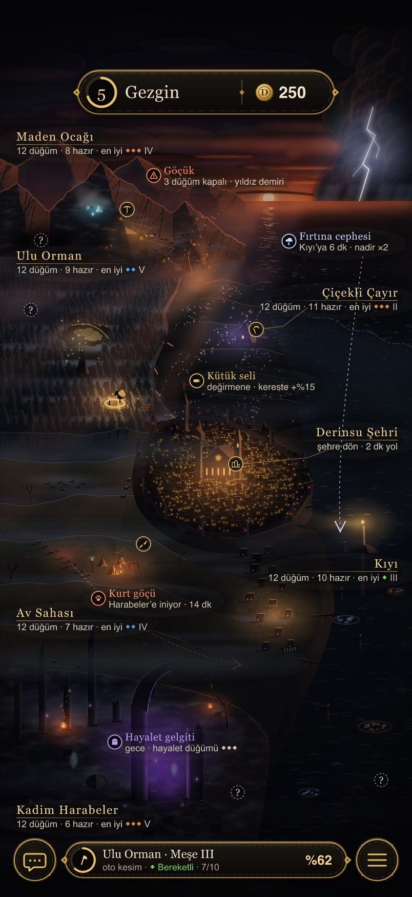

Karanlık, yaşayan tek bir dünya: 6 saha + şehir, her sahada 12 düğüm.

Tek parça, sinematik bir dünya: kızıl ufuk yarığında batan hasta güneş, sağ ufuktan denize çöken fırtına, kömür karası bir kara. Ekranın çoğu karanlık; sahaları, düğümleri ve olayları yalnız ışık gösterir (izabe ocağı, şehir pencereleri, av kampı ateşi, fener mangalı, harabedeki mor yozlaşma). Path of Exile / Diablo havası: soğuk gri-camgöbeği ortam ışığına karşı sıcak ateş havuzları, kül, sis, ıslak kara taş, zincir, kemik, gotik yıkıntı.
Katman sırası gök → uzak dağ → maden dağı → vadi sisi → orman/çayır platosu → şev → şehir → bozkır sırtları → harabe ön planı. Her katmanın arkasına daha açık bir sis bandı konur; koyu siluet açık sise karşı okunur (karanlıkta derinliğin asıl kuralı). Uzak katmanlar açık ve morumsu, yakınlar kömür karası. Ufka bakan yüzlerde kızıl kenar ışığı, ateşe bakan yüzlerde turuncu kenar, gölge yüzlerde soğuk yansıma. Son adımda bir "karanlık geçişi" var: tüm sahne kararır, 15 ışık havuzunun yerinden delinir, sonra ışıklar ekran karışımıyla geri eklenir. Üstüne düşük frekanslı boya dokusu, film greni ve vinyet.
İzabe bacasından sola sürüklenen duman ve kor, nehirde yüzen kütükler, fenerli madenciler, dere kenarında oduncu, çayırda fenerli otçular ve ışıyan gece sefaları, şehirde yüzlerce yanan pencere ve baca dumanı, ot taşıyan katır kervanı, geyik sürüsü, kızıl gözlü kurt sürüsü ve tozu, av kampı ateşi, iskele fenerlerinin suya düşen ışık sütunları, dönen tekneler, deniz feneri hüzmesi, şimşek, yağmur perdeleri, karga sürüleri, her yerde süzülen kül.
Olaylar haritada gerçekten hareket eder. Fırtına cephesi (≈90 dk'da bir, 25 dk sürer): 6 dk önceden denizde koyu rüzgâr şeridi olarak görünür; Kıyı'da Zengin ve Eşsiz sürü şansı ×2, yalnız fırtınada çıkan Eşsiz V "Fırtına Yayını" sürüsü, tekneler %30 yavaş, sığ (Sıradan/Bereketli) sürüler 0:30 içinde dağılır; bitince Harabeler'e döner ve hayalet gelgitini başlatır. Kurt göçü (14 dk): ormandan bozkıra iner, rota boyunca Av Sahası'na +3 kurt düğümü ekler, Ulu Orman'da "Kurtlar yakında" uyarısı verir (4 dk sonra kesim %20 yavaşlar).
Kütük seli: Ulu Orman'da kesilen kütüğü dereye bırakırsan nehirden şehirdeki değirmene akar ve kereste üretimi +%15 olur (haritada kütükler nehirde görünür). Ot kervanı: Çiçekli Çayır'dan teslim edilen kekik/adaçayı av kampına gider; kamp dolu iken Av Sahası'nda tuzak sayısı +1. Sahalar birbirini besler; bu yüzden oyuncu tek sahada kalmaz.
Göçük (Maden Ocağı): 3 düğüm 20 dk kapanır ama yıldız demiri damarı açığa çıkar (Eşsiz V, V. kazma gerek); toz bulutu ve camgöbeği ışıltı olarak çizildi. Hayalet sisi/gelgiti (Kadim Harabeler): yalnız gece; hayalet düğümü ◆◆◆ verir ama sis içindeki düğümlerde vuruş kaçırma şansı +%15. Kurtlar (orman): yavaşlatma.
Her sahada 1–2 sisli "?" düğüm var; yakındaki düğümleri toplarken 3 iz toplanınca açılır (genelde bir kademe yüksek). Saha kuralları: Orman yavaş büyür (kesilen yerde fidan, 6 dk sonra yeni düğüm); Maden'in derin galerileri fener ister; Çayır'da gece sefası yalnız gece açar; Av Sahası'nda sürüler yer değiştirir; Harabeler gece güçlenir; Kıyı gelgit ve fırtınaya bağlıdır.
Saha içinde 12 düğüm araziye yerleşik; her biri bir ağaç (huş I, çam II, meşe III, sedir IV, ulu çınar V). Yerde nitelik renginde ışıyan rün halkası (beyaz/yeşil/mavi/turuncu), bronz plaka üstünde kademe, üstünde ◆ taşları, altında kalan ürün ve ömür. Ölmek üzere olan düğüm kırmızı "0:48 · soluyor"; kilitli ulu çınar zincirlerle bağlı, "V. balta gerek"; kesilmiş kütükte fidan ve "yeni düğüm 0:42"; sisli düğüm "?" ve "keşfet · 1 iz"; toplanan meşede altın ilerleme halkası (%62) ve baltasını kaldırmış kukuletalı oduncu.
Harita → sahaya dokun (ya da etiketine) → saha ekranı: düğüme dokun, alt şeritte seçili düğüm (Meşe III · ◆ Bereketli · 7/10 · 3 dk, ilerleme çubuğu, çanta) → Oto / Elle anahtarı. Sol üst geri düğmesi haritaya, sağ üst düğme şehre döner; haritada "Derinsu Şehri · şehre dön" etiketi de var. Olay başlayınca haritadaki çip olay afişine açılır (süre, etkiler, "Kıyı'ya git · 2 dk").
Sevimli şekil yok; anlatımı ışık ve siluet yapıyor. Renk kısık, doygun renk yalnız sinyal olarak var (nitelik rünleri, ateş, yozlaşma moru). Yazılar sahnenin üstünde kutu değil, yumuşak koyu hale içinde küçük serif başlık + sans sayı. Arayüz aşınmış bronz çerçeve, kazıma kesik çizgi, köşe elmasları: oyunun kömür + altın dili korunuyor.
Dünya tek bakışta "yaşıyor" (olaylar, bağlantılar, tehlikeler sahnenin içinde). Oyuncuya her açılışta bir sebep veriyor (fırtına geldi, kurtlar iniyor, göçük açıldı). Karanlık zemin hem düşük detaylı alanları saklıyor hem de ışık havuzlarına bakışı yönlendiriyor. Üç ekran aynı ışık dilini paylaşıyor.
Güneş altında ya da düşük parlaklıkta karanlık sahne kaybolabilir (parlaklık ayarı ve "aydınlık harita" seçeneği gerekir). Dünya ölçeğinde küçük ayrıntılar telefonda zor seçilir; haritada aynı anda en çok 3–4 olay çipi gösterilmeli, gerisi olay günlüğüne. Çok ışık + parçacık düşük telefonlarda pil yer. Elle çizilen sanatla bu kaliteye ulaşmak ciddi üretim süresi ister.
Katmanlı tuval: (1) her ekran için önceden çizilmiş durağan arka plan (bu SVG üreticileri ya da boyama, 2× WebP, en çok ~7M piksel); (2) ayrı paralaks katmanları (gök, uzak, orta, ön) hafif kaydırma için; (3) ışık tuvali: kara dolgu + her ışık için `destination-out` radyal gradyan, alfa titreşimiyle canlı ateş; (4) küçük parçacık tuvali (kül, kor, yağmur, kütük ve kurt sürüsü eğri üstünde); (5) DOM arayüz (HUD, etiketler, düğüm plakaları). Büyük tuvalde `ctx.filter` blur kullanma; sis ve duman önceden bulanıklaştırılmış sprite olarak çizilsin. Olay takvimi sunucusuz: gerçek saate bağlı tohumlu çizelge, böylece herkes aynı fırtınayı görür ve kayıt localStorage'da kalır.